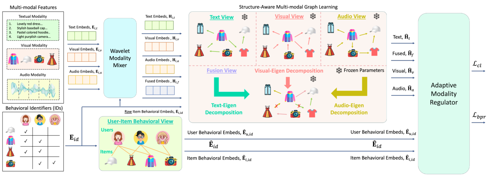

Tackling the Modality Inhibitance Effect with Wavelet-based Modality Integration in Multi-modal Recommendation (基于小波模态整合缓解多模态推荐中的模态抑制效应)
- 会议/期刊: IEEE TKDE 2026
- 作者与机构: Rongqing Kenneth Ong, Andy W. H. Khong（南洋理工大学 EEE 学院）
- 推荐链路定位: 召回（多模态表征学习 + 全库排序）
- 研究方向: 多模态推荐 / 图神经网络推荐
- 论文原文: https://arxiv.org/abs/2610.16229v1
- 开源代码: https://github.com/kennethorq/MMWave
TL;DR (1分钟核心速览)
本文首次提出模态抑制效应 (Modality Inhibitance Effect, MIE)：现有融合式多模态推荐从双模态扩展到三模态（视觉+文本+音频）时性能反而显著下降——新模态不仅自带噪声，还引入跨模态冗余信号。作者用Haar 小波多分辨率分解只保留各模态低频近似分量并做可学习衰减，配合结构感知多模态图学习与交叉加权自适应调节器实现精细融合。在 Baby/Sports/Clothing/TikTok 四数据集、Full-Ranking 协议下，相对 12 个基线平均提升 6.48%（TikTok R@10 达 0.0827，较 BM3 提升 14.5%）。
Background & Motivation (背景与核心矛盾)
- 主流范式: 以 MMGCN、LATTICE、FREEDOM、LGMRec 为代表的融合式 MRS，将各模态特征投影到共享隐空间后通过注意力求和或拼接融合，再叠加 GNN 传播高阶协同信号。
- 前人局限: ① 融合前先投影到压缩隐空间，会把噪声与有效信号纠缠在一起（"先压缩后去噪"的固有缺陷）；② 融合权重依赖启发式规则或预定义注意力，模态数增加时超参线性膨胀，且无法感知各模态图结构差异。
- 核心洞察 (Key Insight): 作者在 TikTok 上实测（表 I）发现 MMGCN/FREEDOM/LGMRec 从双模态切到三模态时 R@5 全面下滑（如 MMGCN 0.0299→0.0309 但 N@5 0.0199→0.0152），而非融合的 BM3 反而在 Full 模态下最优。作者将 MIE 与经典"模态不平衡"严格区分：后者是梯度共享导致弱模态欠优化（\(\partial L/\partial s^{m_1}=\partial L/\partial s^{m_2}\)），MIE 则是跨模态冗余——定义\(R_{m_1,m_2}=|\text{Corr}(s^{m_1}_{uij},s^{m_2}_{uij})|\)，当\(\Delta R(m'|S)>0\)且\(\Delta P_{\text{MRS}}(m'|S)<0\) 时即发生 MIE。
- 本文切入点: 噪声多集中于高频分量，故直接在原始模态信号上做小波分解，仅保留低频近似系数并学习衰减权重，从源头切断冗余。
Method (核心方法设计)
1. 整体框架 (Overall Architecture)
输入为物品三模态原始特征 \(\mathbf{e}_{i,m}\)与用户-物品交互矩阵。先经小波模态混合器：对每个模态做\(L\)级 Haar 离散小波变换，仅对低频近似系数\(A_m^{(L)}\) 施加可学习逐点衰减并逆变换重构，得到"去冗余"模态特征；再经行为门控注入 ID 信息。随后结构感知多模态图学习在单模态相似图与结构融合图上做 LightGCN 式传播，同时用户-物品二部图传播协同信号。最后自适应模态调节器用融合表征的注意力去重加权单模态表征、反之亦然，交叉加权后与 ID 表征相加做内积预测。
flowchart TD
A["原始模态特征 e_i,m (视觉/文本/音频)"] --> B["小波模态混合器: L级Haar分解→低频衰减→逆变换"]
B --> C["行为门控注入 ID 嵌入"]
C --> D["结构感知多模态图学习: 单模态图+特征值融合图传播"]
A2["用户-物品交互图"] --> E["LightGCN 协同传播"]
D --> F["自适应模态调节器: 交叉加权"]
E --> F
F --> G["内积打分 Full-Ranking"]
2. 关键设计拆解 (Key Designs)
-
小波模态混合器（Wavelet Modality Mixer）：针对"先投影后去噪导致噪声纠缠"的痛点，直接在原始信号上做多分辨率分解。用 Haar 低/高通滤波器 \(\delta[k]=[\tfrac{1}{\sqrt2},\tfrac{1}{\sqrt2}]\)、\(\eta[k]=[-\tfrac{1}{\sqrt2},\tfrac{1}{\sqrt2}]\)递归分解得近似系数\(A_m^{(L)}\)与细节系数\(\{D_m^{(l)}\}\)，仅对近似分量施加模态专属可学习衰减\(\tilde{A}_m^{(L)}=W_{1,m}\odot A_m^{(L)}\)，再用仅含低频合成滤波器的修正逆变换重构\(\tilde{E}_{i,m}=W_m^{-1}(\tilde{A}_m^{(L)})\)。直觉：高频即噪声，丢弃细节系数等价于显式频域硬去噪，比 MLP 隐式映射更具可解释性与定位性（时频局部化同时适配序列模态文本/音频与空间模态图像）。
-
结构感知多模态图学习（Structure-aware Multi-modal Graph Learning）：针对"启发式融合图忽略结构信息且超参随模态数膨胀"的痛点，先对各单模态 top-\(K\)稀疏化相似图\(\ddot{S}_m\)做谱分解\(V_m\Lambda_m V_m^\top=\ddot{S}_m\)，再用其他模态的特征值重构本模态图：\(\hat{S}_m=\frac{1}{|\mathcal{M}|-1}\sum_{m'\neq m}\ddot{S}_m\odot\hat{\lambda}_{m'}\)，最后平均池化得融合图\(\hat{S}_f\)。所有图训练前预构建，零额外训练开销；特征值加权使各模态结构贡献均衡且免调融合超参。
-
自适应模态调节器与训练目标：针对"注意力求和无法处理跨模态互补"的痛点，设计互加权：用融合注意力 \(\gamma_f\)重加权单模态\(\ddot{H}_{i,m}=\gamma_f\hat{H}_{i,m}\)，用各单模态注意力均值重加权融合表征\(\ddot{H}_{i,f}=\frac{1}{|\mathcal{M}|}\sum_m\gamma_m\hat{H}_{i,f}\)，再经协同信号门控\(\sigma(W\hat{E}_{id})\)调制后聚合。总损失\(\mathcal{L}=\mathcal{L}_{\text{bpr}}+\psi_1\mathcal{L}_{\text{cl}}+\psi_2\|\Theta\|_2^2\)，其中\(\mathcal{L}_{\text{cl}}\)为 ID 表征与模态侧表征间的 InfoNCE（批内负采样，温度\(\tau\)）；BPR 采用标准均匀负采样，推理为内积全库排序。
Experimental Setup & Evaluation Protocol (实验设置与评估协议)
- 数据集与预处理（均
5-core过滤）：
| 数据集 | #Users | #Items | #Interactions | 密度 | 模态/场景 |
|---|---|---|---|---|---|
| Baby | 19,445 | 7,050 | 160,792 | 0.117% | 视觉+文本（电商） |
| Sports | 35,598 | 18,357 | 296,337 | 0.045% | 视觉+文本（电商） |
| Clothing | 39,387 | 23,033 | 278,677 | 0.031% | 视觉+文本（电商） |
| Tiktok | 9,308 | 6,710 | 68,722 | 0.110% | 视觉+文本+音频（短视频） |
- 数据划分与防穿越: 按 80%/10%/10% 比例随机划分训练/验证/测试（沿用 FREEDOM/LGMRec 惯例），非时间戳切分。
- 排名评测协议: 无偏
Full-Ranking（全库未交互物品排序），指标 Recall@{5,10,20} 与 NDCG@{5,10,20}。 - 对比基线与超参: 2 个通用（BPR、LightGCN）+ 10 个多模态（VBPR、LGCN-M、MMGCN、GRCN、SLMRec、BM3、FREEDOM、LGMRec、MIG-GT 等）；嵌入维度 \(d=64\)，Xavier 初始化，Adam，1000 epoch，batch=2048，早停 patience=20；3 个随机种子重复，paired t-test\(p<0.01\) 显著。
Key Experimental Results (实验关键数据)
1. 主实验对比 (Main Results)
| 数据集/指标 | LightGCN | BM3 | FREEDOM | LGMRec | MIG-GT | MMWave | Improv. |
|---|---|---|---|---|---|---|---|
| Baby R@10 | 0.0453 | 0.0548 | 0.0626 | 0.0653 | 0.0650 | 0.0690 | +5.7% vs LGMRec |
| Baby N@10 | 0.0246 | 0.0297 | 0.0327 | 0.0353 | 0.0352 | 0.0373 | +5.7% |
| Sports R@10 | 0.0542 | 0.0613 | 0.0724 | 0.0719 | 0.0738 | 0.0760 | +3.0% vs MIG-GT |
| Sports N@10 | 0.0300 | 0.0339 | 0.0390 | 0.0388 | 0.0402 | 0.0419 | +4.2% |
| Clothing R@10 | 0.0338 | 0.0418 | 0.0635 | 0.0556 | 0.0629 | 0.0673 | +6.0% vs FREEDOM |
| Clothing N@10 | 0.0185 | 0.0225 | 0.0340 | 0.0305 | 0.0343 | 0.0365 | +6.4% |
| Tiktok R@10 | 0.0529 | 0.0722 | 0.0571 | 0.0502 | 0.0624 | 0.0827 | +14.5% vs BM3 |
| Tiktok N@10 | 0.0266 | 0.0379 | 0.0319 | 0.0267 | 0.0303 | 0.0408 | +7.7% |
2. 消融实验 (Ablation Study)
| 变体 | Baby R@10 | Sports R@10 | Clothing R@10 | Tiktok R@10 |
|---|---|---|---|---|
| MMWave (Full) | 0.0690 | 0.0760 | 0.0673 | 0.0827 |
| w/o 小波模态混合器 | 0.0636 | 0.0712 | 0.0627 | 0.0781 |
| w/o 结构感知图学习 | 0.0552 | 0.0698 | 0.0462 | 0.0739 |
| w/o 自适应调节器 | 0.0578 | 0.0698 | 0.0549 | 0.0676 |
| 仅文本模态 | 0.0636 | 0.0619 | 0.0627 | 0.0781 |
| 仅视觉模态 | 0.0552 | 0.0712 | 0.0462 | 0.0739 |
| 仅融合表征 | 0.0578 | 0.0698 | 0.0549 | 0.0676 |
3. 关键实验发现 (Key Findings)
- 结构感知图学习是最大贡献项：移除后 Clothing R@10 从 0.0673 暴跌至 0.0462（-31.4%），远超其他组件，说明单模态图 + 特征值融合图的双图结构是性能基石；而 TikTok 上移除小波混合器或调节器均造成约 7.6% 平均下降，证明三模态场景下"去冗余"与"精细融合"同等关键。
- MIE 被有效缓解：在 TikTok 0%/5%/10% 模态污染下，MMWave 的 Full 模态配置始终优于任意双模态子集（对比表 I 中基线 Full 反而最差），且污染加剧时视觉+音频组合逼近 Full，说明交叉加权能动态抑制不可靠文本模态的冗余贡献。
- 小波优于 MLP 去噪且对基函数鲁棒：替换为 MLP 去噪（参数量更多）性能全面下降，证明增益来自频域显式分解而非模型容量；Haar/Db4/Sym4/Coif1/Bior4.4/Dmey 六种基函数下性能波动小，仅 TikTok 上 Bior4.4 因线性相位特性略优。分解层数 \(L=2\sim3\)最优，\(L=4\) 在 TikTok 上因过度分解细节敏感特征而退化。
Highlights & Limitations (亮点、对比与审稿批判)
- 与代表作对比 (vs. Prior Work): 相比 LATTICE/FREEDOM 的"投影后融合 + 冻结图"，MMWave 在原始信号域做小波去噪并让融合图吸收跨模态特征值结构；相比 LGMRec 的注意力求和，交叉加权调节器实现单模态↔融合表征的双向互导，天然可扩展到任意模态数。
- 可迁移亮点: ① "仅保留低频近似系数 + 可学习衰减 + 低频逆变换"是极轻量的即插即用去噪模块，可迁移到序列推荐的多源特征清洗；② 用其他模态特征值重构本模态图的谱融合技巧，可迁移到多视图图对比学习。
- 审稿级局限批判: ① 内存开销显著高于基线（Sports 上 4.67GB vs FREEDOM 3.08GB，训练 10.41s/epoch），谱分解预处理成本未计入，工业级规模（千万物品）下 \(N\times N\) 特征分解不可行；② 仅在 TikTok 单数据集验证三模态，且文本模态在短视频场景被证明不可靠，MIE 理论（式 43-47）缺乏跨更多模态数（4+）的实证支撑。
Rating (四维评分)
- 方法创新性 (Novelty): ⭐⭐⭐⭐ （核心机制与方法设计具备明确创新性，理论与实验动机支撑充分）
- 评估协议与实验扎实度 (Protocol & Experiments): ⭐⭐⭐⭐ （主流公开数据集评测完整，包含多基线对比与消融实验验证）
- 写作与数学规范度 (Clarity & Rigor): ⭐⭐⭐⭐ （问题形式化定义清晰，核心模块数学推导与架构阐述严谨易读）
- 工业落地与复现价值 (Industrial & Practical Value): ⭐⭐⭐ （兼顾推荐效果增益与训练/推理效率，具备实际场景迁移参考价值）